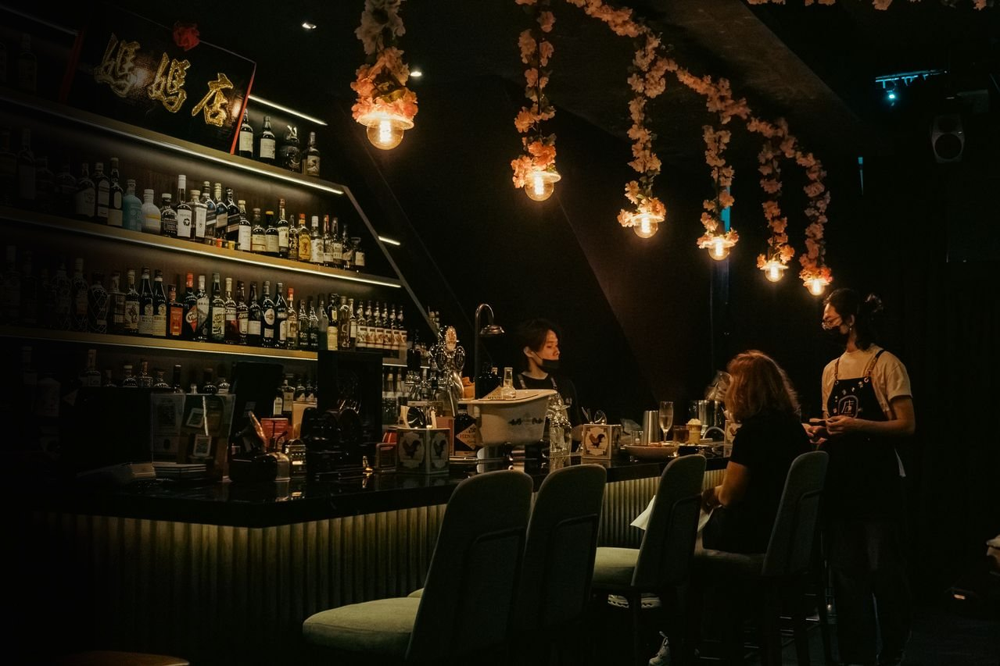
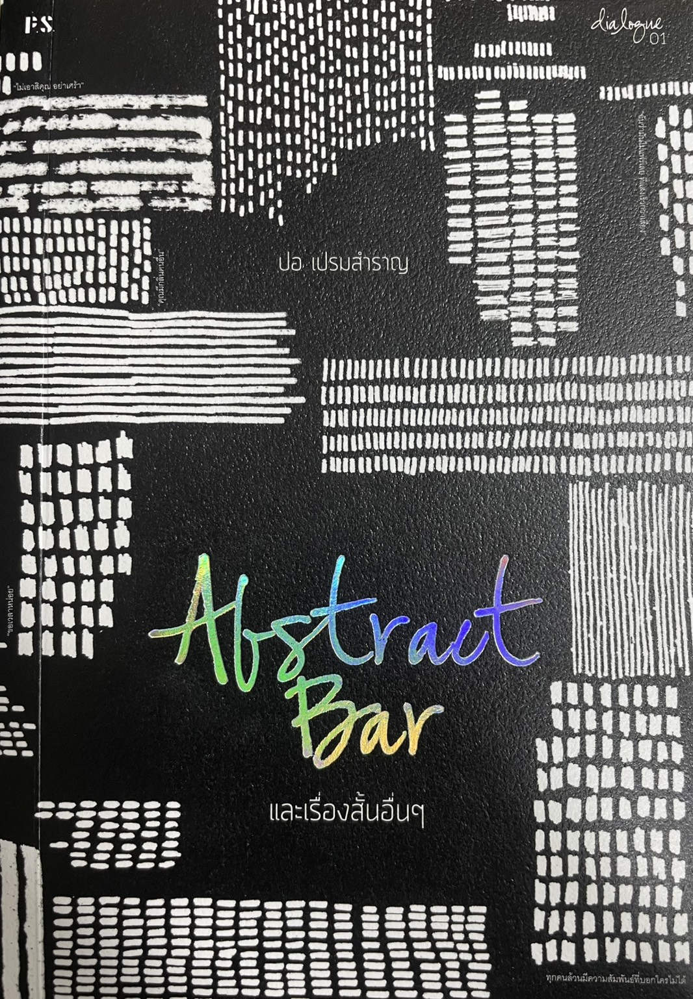

เรื่องเล่า / บทสนทนา / ความรู้สึก
ABSTRACT
BAR
และ
เรื่องสั้นอื่น ๆ
" ท่ามกลางบรรยากาศเงียบงัน ณ บาร์ที่ไม่มีเมนู มีเพียงเรื่องเล่าเพียวๆ และความสัมพันธ์ที่ไม่สมบูรณ์แบบ เปรียบเสมือนการดื่มด่ำความจริงเพียวเพียวของชีวิต "


Abstract Bar
ไม่ใช่แค่เรื่องสั้นในหนังสือเท่านั้น แต่คือ พื้นที่หลบภัยทางความรู้สึก ของเหล่าผู้แตกสลาย
ผลงานรวมเรื่องสั้นและบทสนทนาโดย ปอ เปรมสำราญ ที่จะพาคุณไปสู่ พื้นที่สมมติยามค่ำคืน ณ บาร์นามธรรมที่ไม่ปรากฏบนแผนที่ แต่กลับชัดเจนในความรู้สึกของผู้หลงทาง นั่งที่หน้าเคาน์เตอร์บาร์ ฟังเสียงรินเครื่องดื่ม เคล้าความเงียบ รวมดื่มด่ำกับ "ความจริงรสขม" ที่เป็นความเพียวของชีวิต ผ่านบทสนทนาระหว่างบาร์เทนเดอร์และลูกค้าแปลกหน้า ที่แวะเวียนกันมาบอกเล่าเรื่องราว บาดแผล และความเงียบเหงาในชีวิต
เพื่อเปลี่ยนจากการที่ต้องเร่งรีบ ต้องชัดเจน ต้องสมบูรณ์แบบ มาเรียนรู้ผ่านเรื่องสั้นและบทสนทนาที่ถ่ายทอดชีวิตของมนุษย์เมือง ความสัมพันธ์ที่คลุมเครือ ความโหยหาที่ไร้เสียง และร่องรอยความทรงจำที่ไม่อาจลบเลือน โดยใช้รสชาติของเครื่องดื่ม แสงไฟสลัว และบทสนทนาระหว่างคนแปลกหน้าเป็นสื่อกลาง ก่อนทิ้งท้ายด้วยคำถามที่ชวนให้คิดว่า อีกนานกว่าบาร์เราจะปิด
" สิ่งที่ได้จากหนังสือเล่มนี้ "
เรียนรู้จากความเหงาและความเงียบ
ความเหงาไม่ใช่สิ่งที่ต้องรีบแก้ไขหรือวิ่งหนี แต่เป็นธรรมชาติของมนุษย์ในความเงียบที่เปิดโอกาสให้เราได้กลับมาสำรวจความรู้สึกของตัวเอง
สร้างความเข้าใจในความสัมพันธ์
เรียนรู้ที่จะเข้าใจว่าความสัมพันธ์ไม่จำเป็นต้องมีสถานะหรือสมบูรณ์แบบ บางความสัมพันธ์มีไว้แค่เพื่อผ่านเข้ามาแล้วจากไป
รู้จักยอมรับความทรงจำที่ผ่านมา
ในการรับมือกับความทรงจำและผู้คนที่ผ่านพ้นไป ไม่จำเป็นต้องบังคับตัวเองให้ลืมเลือน เพียงแค่เรียนรู้ที่จะอยู่ร่วมกับความทรงจำที่ทั้งทุกข์และสุขเหล่านั้นให้ได้
พักผ่อนจากความคาดหวัง
ชะลอความเร็วในการใช้ชีวิตในเมือง หลีกหนีความวุ่นวาย เพื่อทบทวนอารมณ์ความรู้สึกตัวเองอย่างซื่อสัตย์โดยไม่มีใครมาตัดสิน ไม่ต้องตอบรับความคาดหวังของใคร
เราตามหา เพื่อค้นพบ เพื่ออยู่ด้วยกัน เพื่อเรียนรู้ว่าไม่ใช่ เพื่อจากกันไป
แล้วออกตามหา เพื่อค้นพบ เพื่ออยู่ด้วยกัน เพื่อเรียนรู้ว่าไม่ใช่ เพื่อจากกันไป
ตามหาอีกครั้งและอีกครั้ง เสมอไป
ปอ เปรมสำราญ